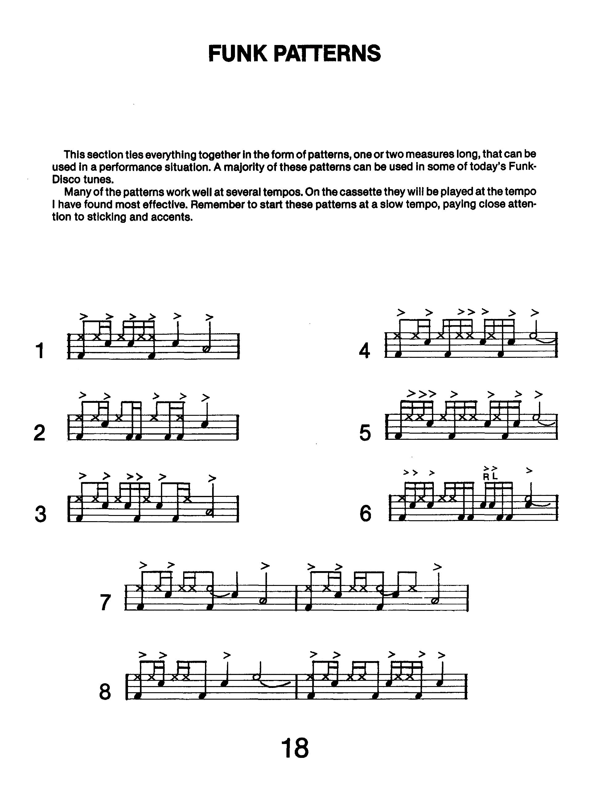

Review: Advanced Funk Studies by Rick Lantham
I don’t really have a schedule for doing reviews and I don’t want to burn through them, but I really enjoyed writing about A Funky Primer, so let’s have another one. I said I would review these books more or less in the order I went through them, but after A Funky Primer I want to jump ahead a bit to another funk book called Advanced Funk Studies, written by Rick Lantham and published in 1980. I think this was the ~4th book I went through.
Advanced Funk Studies is often seen as the next step for a drummer who has already gone through something like A Funky Primer. In some ways the books are quite similar: they both start with warmup exercises before presenting patterns that are broken down, then moving on to full grooves.
Compared to A Funky Primer, Advanced Funk Studies seems to be directly channeling the energy of some specific funk/fusion drummers from the 1970’s. While there’s no “suggested listening” section, one of the most interesting moments of the book comes in the form of a transcription section, which features grooves/fills/solos from Steve Gadd, David Garibaldi, Harvey Mason, Peter Erskine, Gerry Brown, Paul Leim, Richard Calhoun, and Ed Greene. In addition, the last ~20 pages of the book are filled with written out drum solos.
Drum books fall on a spectrum. On one end, you’ll find books that seem to explore ideas to an exhausting degree, with endless variations and permutations that can feel tedious and redundant. On the other end, there are books that feel like collections of licks, with no strong method that connects them all together. Good books are somewhere in the middle, but Advanced Funk Studies is unfortunately on the latter end.
Even the introductory exercises don’t have any sort of system that’s easy to follow; the different patterns all seem arbitrary with their inclusion. When the book gets to grooving, things don’t get any better. I can’t find any sort of evolution to the patterns since there isn’t really a coherent difficulty curve to the book. And while most of the grooves are in 4/4, there are grooves in 3/4, 5/4, and 7/8 that come out of nowhere without any lead up or preparation.
There’s a single page of fills that I don’t understand at all — it’s a bit of a hodgepodge and they’re all pretty unremarkable, save for a beastly nested-tuplet lick. The transcription section is one of the better moments of the book, although the attention that the different drummers get is very uneven, and I think some of them are inaccurate (I can’t really blame Lantham for this, he did all of them more than 40 years ago by listening to either vinyl or cassette).
The solo section is without a doubt the most fascinating and cogent part of Advanced Funk Studies. The book has ten of them, about 20 to 30 bars long, mostly centered around 120–130 BPM. While they’re interesting to pick apart and play note–for–note, I’m not sure what the overall long–term benefit is in learning them. Each solo does follow a discernible motif.
I don’t want to rag on Advanced Funk Studies too much, because the book will at least introduce a drummer to some ideas that could be totally new to them. For instance, there is a discussion about ghost notes, although it’s not a very good one; the discussion places more emphasis on ghosting cymbal notes rather than snare notes, which is just all wrong. In addition, ghost notes aren’t really applied throughout the exercises — the book saves them for the solos and transcriptions. The book also uses the “ghost all non–accented notes” approach, which I’m not a fan of. You have to figure it out by listening to the records.
Other ideas include more advanced timekeeping patterns on the cymbal. That is to say, patterns that aren’t steady 8ths or 16ths. A lot of the material also has a linear flair to it, however the book doesn’t use the term “linear”. I’m guessing that word hadn’t come into use until some time after the book was published.
I must say, the engraving is very good. It doesn’t look formally engraved; rather, I think Lantham did everything with a pen and a straight edge (and maybe some stamps). While the sheets are clean, the notation key is kind of whack:
The noteheads for open hi hat and the toms are not good — they look like half notes. Some people still do this today, even though it’s bad practice. I don’t really know why the toms even need special noteheads.
Overall, I’m not a huge fan of Advanced Funk Studies. The book just isn’t very methodical, and it’s tough to evaluate the utility of just chugging along as you navigate the exercises. Like I said, this book could (at the bare minimum) be the first exposure a drummer may get to these ideas. And truth be told, I sadly haven’t really found an alternative that’s all that much better. I’m somewhat tempted to solve this problem myself… stayed tuned for my debut book Go Funk Yourself. /s
(I’m only half joking)
Posted on April 25, 2021